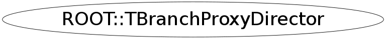

class ROOT::TBranchProxyDirector
TBranchProxyDirector This class is used to 'drive' and hold a serie of TBranchProxy objects which represent and give access to the content of TTree object. This is intended to be used as part of a generate Selector class which will hold the directory and its associate
Function Members (Methods)
public:
| ~TBranchProxyDirector() | |
| void | Attach(ROOT::TBranchProxy* p) |
| void | Attach(ROOT::TFriendProxy* f) |
| TH1F* | CreateHistogram(const char* options) |
| Long64_t | GetReadEntry() const |
| TTree* | GetTree() const |
| void | SetReadEntry(Long64_t entry) |
| TTree* | SetTree(TTree* newtree) |
| ROOT::TBranchProxyDirector | TBranchProxyDirector(TTree* tree, Long64_t i) |
| ROOT::TBranchProxyDirector | TBranchProxyDirector(TTree* tree, Int_t i) |
Class Charts
{kind=link}
{kind=link}
{kind=link}
{kind=link}

Function documentation
TBranchProxyDirector(TTree* tree, Int_t i)
void Attach(TBranchProxy* p)
void Attach(TFriendProxy* p)
void SetReadEntry(Long64_t entry)